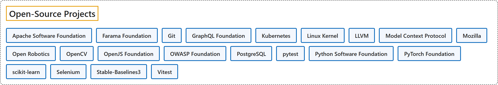

9. Open-Source Projects
Classification

Glossary
| Term | Definition | 中文翻译 | Source |
|---|---|---|---|
| Open-Source Projects 开源项目 |
(context) "Open source software or information can be obtained legally and for free from the internet, and can be used, shared or changed without paying or asking for special permission" | （语境）开源软件或信息可以从互联网上合法、免费地获取，并且无需付费或特别许可就能使用、分享或修改 | Cambridge University Press & Assessment, n.d., "open source" adjective |
| Apache Software Foundation Apache 软件基金会 |
"ASF is a U.S. 501(c)(3) charitable organization funded by individual donations and corporate sponsors, and is run almost exclusively by volunteers that provide support for hundreds of projects." | ASF 是一家美国 501(c)(3) 慈善组织，由个人捐款和企业赞助商资助，几乎完全由志愿者运营，这些志愿者为数百个项目提供支持。 | The Apache Software Foundation, n.d., "Institutionalizing Open Source" section, para. 1 |
| Farama Foundation Farama 基金会 |
"The Farama Foundation is a 501(c)(3) nonprofit that advances reinforcement learning through open-source tools and shared standards for researchers and industry practitioners." | Farama 基金会是一家 501(c)(3) 非营利组织，通过开源工具和共享标准来推进强化学习，服务于研究人员和行业从业者。 | The Farama Foundation, n.d., para. 1 |
| Git Git |
"Git is a free and open source distributed version control system designed to handle everything from small to very large projects with speed and efficiency." | Git 是一个免费且开源的分布式版本控制系统，旨在处理从小型到超大型的各种项目，并做到快速、高效。 | Git, n.d., para. 1 |
| GraphQL Foundation GraphQL 基金会 |
"The GraphQL Foundation is a neutral foundation founded by global technology and application development companies." | GraphQL 基金会是一个中立的基金会，由全球技术和应用开发公司创立。 | GraphQL Foundation, n.d., "What is the GraphQL Foundation?" section, para. 1 |
| Kubernetes Kubernetes |
"Kubernetes is a portable, extensible, open source platform for managing containerized workloads and services that facilitate both declarative configuration and automation." | Kubernetes 是一个可移植、可扩展的开源平台，用于管理容器化的工作负载和服务，可促进声明式配置和自动化。 | The Kubernetes Authors, n.d., para. 1 |
| Linux Kernel Linux 内核 |
"Linux is a clone of the operating system Unix, written from scratch by Linus Torvalds with assistance from a loosely-knit team of hackers across the Net." | Linux 是操作系统 Unix 的克隆，由 Linus Torvalds 从零写成，并得到网络上一群松散组织的黑客的协助。 | The kernel development community, n.d., "What is Linux?" section, para. 1 |
| LLVM LLVM |
"The LLVM Project is a collection of modular and reusable compiler and toolchain technologies." | LLVM 项目是一组模块化、可复用的编译器和工具链技术。 | LLVM Project, n.d., "LLVM Overview" section, para. 1 |
| Model Context Protocol 模型上下文协议 |
"MCP (Model Context Protocol) is an open-source standard for connecting AI applications to external systems." | MCP（模型上下文协议）是一种开源标准，用于连接 AI 应用程序与外部系统。 | Model Context Protocol, n.d., para. 1 |
| Mozilla Mozilla |
"The Mozilla Project is a global community of people who believe that openness, innovation, and opportunity are key to the continued health of the internet." | Mozilla 项目是一个由人们组成的全球社区，他们相信开放、创新和机遇是互联网持续健康的关键。 | Mozilla, n.d., "About Mozilla" section, para. 1 |
| Open Robotics 开源机器人基金会（Open Robotics） |
"We create open software and hardware platforms for robotics." | 我们为机器人打造开放的软件和硬件平台。 | Open Source Robotics Foundation, n.d., "Open platforms for robotics" section, para. 1 |
| OpenCV OpenCV |
"OpenCV (Open Source Computer Vision Library) is an open source computer vision and machine learning software library." | OpenCV（开源计算机视觉库）是一个开源的计算机视觉和机器学习软件库。 | OpenCV team, n.d., para. 1 |
| OpenJS Foundation OpenJS 基金会 |
"The OpenJS Foundation is the central place to support collaborative development of JavaScript and web technologies." | OpenJS 基金会是支持 JavaScript 和 Web 技术的协作开发的核心场所。 | OpenJS Foundation, n.d., "Join the OpenJS Foundation" section, para. 1 |
| OWASP Foundation OWASP 基金会 |
"The Open Worldwide Application Security Project (OWASP) is a 501(c)(3) nonprofit foundation that works to improve the security of software." | 开放全球应用安全项目（OWASP）是一家 501(c)(3) 非营利基金会，致力于提升软件的安全性。 | OWASP Foundation, n.d., "The OWASP Foundation" section, para. 1 |
| PostgreSQL PostgreSQL |
"PostgreSQL is an object-relational database management system (ORDBMS) based on POSTGRES, Version 4.2, developed at the University of California at Berkeley Computer Science Department." | PostgreSQL 是一个对象关系数据库管理系统（ORDBMS），基于 POSTGRES 4.2 版，由加州大学伯克利分校计算机科学系开发。 | The PostgreSQL Global Development Group, n.d., "1. What Is PostgreSQL?" section, para. 1 |
| pytest pytest |
"The pytest framework makes it easy to write small, readable tests, and can scale to support complex functional testing for applications and libraries." | pytest 框架让编写小而易读的测试变得容易，并且可以扩展以支持面向应用程序和库的复杂功能测试。 | pytest-dev, n.d., para. 1 |
| Python Software Foundation Python 软件基金会 |
"The Python Software Foundation (PSF) is a non-profit membership organization devoted to advancing open source technology related to the Python programming language." | Python 软件基金会（PSF）是一个非营利会员制组织，致力于推进开源技术，这些技术与 Python 编程语言相关。 | Python Software Foundation, n.d., "Mission" section, para. 4 (the official mission statement) |
| PyTorch Foundation PyTorch 基金会 |
"The PyTorch Foundation is the vendor-neutral home for the open source intelligence layer developers use for training, optimizing, serving, and running models on any chip in any cloud for any agent." | PyTorch 基金会是供应商中立的家园，承载开源智能层，开发者用它在任何芯片、任何云上为任何智能体训练、优化、部署和运行模型。 | PyTorch Foundation, n.d., para. 1 |
| scikit-learn scikit-learn |
"Scikit-learn is an open source machine learning library that supports supervised and unsupervised learning." | Scikit-learn 是一个开源机器学习库，支持监督学习和无监督学习。 | scikit-learn developers, n.d., para. 1 |
| Selenium Selenium |
"Selenium is an umbrella project for a range of tools and libraries that enable and support the automation of web browsers." | Selenium 是一个伞形项目，涵盖一系列工具和库，用于实现和支持 Web 浏览器的自动化。 | Selenium project, n.d., para. 1 |
| Stable-Baselines3 Stable-Baselines3 |
"Stable Baselines3 (SB3) is a set of reliable implementations of reinforcement learning algorithms in PyTorch." | Stable Baselines3（SB3）是一套用 PyTorch 编写的强化学习算法的可靠实现。 | Raffin, A., Hill, A., Gleave, A., Kanervisto, A., Ernestus, M., & Dormann, N., n.d., para. 1 |
| Vitest Vitest |
"Vitest (pronounced as "veetest") is a next generation testing framework powered by Vite." | Vitest（读作“veetest”）是一个由 Vite 驱动的下一代测试框架。 | Vitest team, n.d., para. 1 |
References
Cambridge University Press & Assessment. (n.d.). Open source. In Cambridge Dictionary. Retrieved October 27, 2026, from https://dictionary.cambridge.org/dictionary/english/open-source
Git. (n.d.). Git. Retrieved October 27, 2026, from https://git-scm.com/
GraphQL Foundation. (n.d.). What is the GraphQL Foundation?. Retrieved October 27, 2026, from https://graphql.org/community/foundation/
LLVM Project. (n.d.). The LLVM compiler infrastructure project. Retrieved October 27, 2026, from https://llvm.org/
Model Context Protocol. (n.d.). What is the Model Context Protocol (MCP)?. Retrieved October 27, 2026, from https://modelcontextprotocol.io/docs/getting-started/intro
Mozilla. (n.d.). Learn about Mozilla. Retrieved October 27, 2026, from https://www.mozilla.org/en-US/about/
Open Source Robotics Foundation. (n.d.). Open Robotics. Retrieved October 27, 2026, from https://www.openrobotics.org/
OpenCV team. (n.d.). About. Retrieved October 27, 2026, from https://opencv.org/about/
OpenJS Foundation. (n.d.). A safe and modern home for JavaScript technologies. Retrieved October 27, 2026, from https://openjsf.org/
OWASP Foundation. (n.d.). About OWASP. Retrieved October 27, 2026, from https://owasp.org/about/
pytest-dev. (n.d.). pytest documentation. Retrieved October 27, 2026, from https://docs.pytest.org/en/stable/
Python Software Foundation. (n.d.). Mission. Retrieved October 27, 2026, from https://www.python.org/psf/mission/
PyTorch Foundation. (n.d.). PyTorch Foundation. Retrieved October 27, 2026, from https://pytorch.org/foundation/
Raffin, A., Hill, A., Gleave, A., Kanervisto, A., Ernestus, M., & Dormann, N.. (n.d.). Stable-Baselines3 docs - Reliable reinforcement learning implementations. Retrieved October 27, 2026, from https://stable-baselines3.readthedocs.io/en/master/
scikit-learn developers. (n.d.). Getting started. Retrieved October 27, 2026, from https://scikit-learn.org/stable/getting_started.html
Selenium project. (n.d.). The Selenium browser automation project. Retrieved October 27, 2026, from https://www.selenium.dev/documentation/
The Apache Software Foundation. (n.d.). About the ASF. Retrieved October 27, 2026, from https://www.apache.org/foundation/
The Farama Foundation. (n.d.). About. Retrieved October 27, 2026, from https://farama.org/about
The kernel development community. (n.d.). Linux kernel release 6.x http://kernel.org/. Retrieved October 27, 2026, from https://docs.kernel.org/admin-guide/README.html
The Kubernetes Authors. (n.d.). Overview. Retrieved October 27, 2026, from https://kubernetes.io/docs/concepts/overview/
The PostgreSQL Global Development Group. (n.d.). 1. What is PostgreSQL?. Retrieved October 27, 2026, from https://www.postgresql.org/docs/current/intro-whatis.html
Vitest team. (n.d.). Getting started. Retrieved October 27, 2026, from https://vitest.dev/guide/